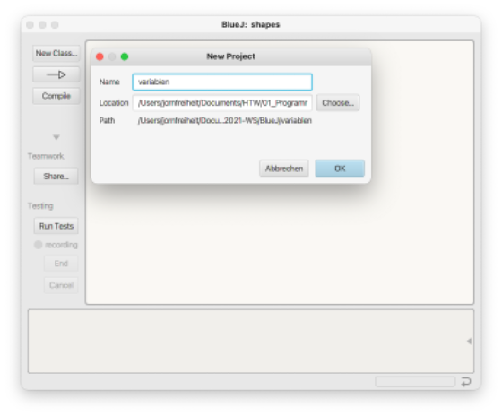
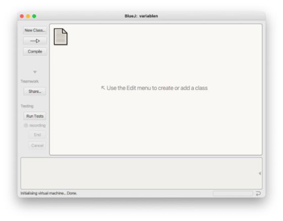
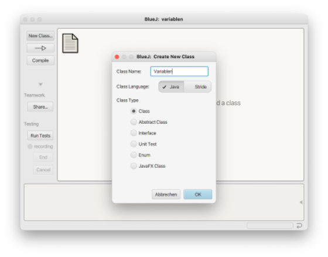
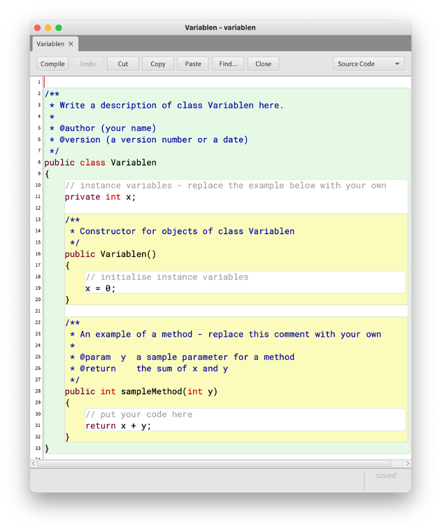
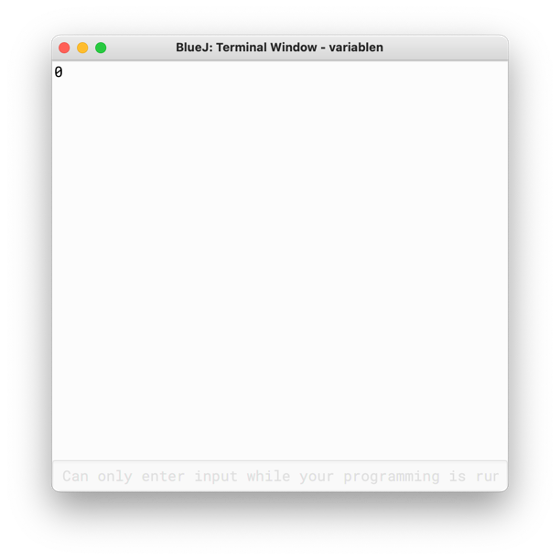
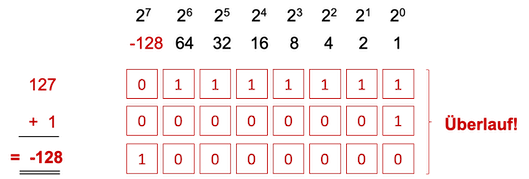

Variablen und Datentypen¶
Sowohl in dem euklidischen Algorithmus als auch bei der (3n+1)-Vermutung haben wir mit Zahlen gerechnet. Diese haben wir in Variablen gespeichert (z.B. a, b, n). Wir kennen Variablen bereits aus der Mathematik. Dort "speichern" wir Werte in diesen Variablen. Das gleiche passiert auch beim Programmieren.
Unsere erste Klasse¶
Damit wir das Thema Variablen und Datentypen auch gleich anwenden können, schreiben wir nun endlich unser erstes Programm, d.h. wir implementieren unsere erste Klasse. Dazu öffnen wir BlueJ und wählen im Menü Project --> New Project. Es öffnet sich ein Dateiauswahlfenster. Unter Location sollten Sie sich einen Ordner aussuchen, in den Sie zukünftig Ihre BlueJ-Projekte speichern, z.B. unter Ihren Dokumenten/Prog1/BlueJ. Als Projektname können Sie z.B. variablen nehmen.

Es erscheint

Klicken Sie auf den Button New Class... und geben Sie Ihrer Klasse den Namen Variablen. Beachten Sie, dass wir Klassennamen stets mit einem Großbuchstaben beginnen!

Klicken Sie den Button Compile, dann verschwinden die Streifen im Klassen-Icon. Doppelklicken Sie auf die Klasse Variablen, es öffnet sich das Editor-Fenster:

Wir schauen uns den darin enthaltenen Code mal etwas genauer an (die erste leere Zeile habe ich gelöscht, deshalb ist die Zeilennummerierung um 1 versetzt):
1 2 3 4 5 6 7 8 9 10 11 12 13 14 15 16 17 18 19 20 21 22 23 24 25 26 27 28 29 30 31 32 | |
- Die Zeilen
1-6enthalten einen Kommentar, einen sogenannten JavaDoc-Kommentar. JavaDoc-Kommentare beginnen mit/**und enden mit*/. Dazwischen kann alles stehen und solche Kommentare gehen meistens über mehrere Zeilen. Wir werden JavaDoc noch näher kennenlernen. - In Zeile
7steht die Klassensignatur. Es handelt sich um eine öffentliche Klasse (deshalbpublic- lernen wir noch) und nach dem Schlüsselwortclasssteht der KlassennameVariablen. - In Zeile
8beginnt die Implementierung der Klasse. Diese Implementierung wird durch eine öffnende geschweifte Klammer{begonnen und endet in Zeile32mit der schließenden geschweiften Klammer}. - In Zeile
9steht ein sogenannter Zeilenkommentar. Ein Zeilenkommentar beginnt mit//und endet automatisch am Ende der Zeile. Hier dient der Kommentar dazu, über die Objektvariablexzu informieren, die in Zeile10deklariert wird. - In Zeile
10wird eine Variable deklariert. Der Name der Variable istx. Sie ist vom Datentypint. Wir können nur innerhalb der KlasseVariablenauf diese Variable zugreifen, da sie alsprivatedeklariert wird. Zu Variablen und Datentypen kommen wir gleich ausführlich. - In den Zeilen
12-14steht erneut ein JavaDoc-Kommentar - dieses Mal kommentiert er die nachfolgende Methode, den sogenannten Konstruktor. - In den Zeilen
15-19sehen wir die erste Methode der Klasse. Diese Methode ist speziell, denn sie heißt exakt so, wie die Klasse selbst. Es handelt sich um einen sogenannten Konstruktor. Diese Methode wird aufgerufen, um ein Objekt der Klasse zu erzeugen. Wir werden uns ausführlich mit Konstruktoren beschäftigen. - Typischerweise werden im Konstruktor alle Objektvariablen initialisiert, d.h. die Objektvariablen bekommen einen initialen Wert. Hier wird der Objektvariablen
xder Wert0zugewiesen (Zeile18). - In den Zeilen
27-31wird die MethodesampleMethod()implementiert. Dieser Methode wird ein Parameteryvom Typintübergeben. Diese Methode gibt den Wert der Summe vonxundyzurück. Wir kommen dazu, wenn wir uns ausgiebiger mit Methoden beschäftigen.
Zunächst ändern wir dieses Programm, indem wir
- (fast) alle Kommentare löschen und
- die
sampleMethod()-Methode umbenennen und umprogrammieren.
Unsere Klasse sieht nun so aus:
1 2 3 4 5 6 7 8 9 10 11 12 13 14 15 16 | |
Die Implementierung unserer Objektmethode hat sich geändert:
- der Name der Methode ist nun
printObjectState(), - die Methode erwartet keinen Parameter mehr,
- der Rückgabetyp (kennen wir noch nicht) der Methode ist nicht mehr
int, sondernvoidund - die Implementierung der Methode besteht aus einer einzigen Anweisung
System.out.println(x);.
Wir klicken auf den Compile-Button, dann erzeugen wir uns ein Objekt von der Klasse Variablen und nennen es variable1 und führen für dieses Objekt die Methode printObjectState() aus. Es erscheint

Dieses Fenster ist unser Terminal-Fenster (auch Konsole genannt). In diesem Terminal-Fenster wird der Wert der Objektvariablen x ausgegeben. Dieser Wert ist 0.
System.out.println(x);¶
Schauen wir uns System.out.println(x); zunächst etwas genauer an. Wir verwenden hier eine Klasse, nämlich die Klasse System. Diese Klasse existiert bereits und wurde von den Java-Entwicklern für uns geschrieben. Sie gehört zum Standardpaket von Java, existiert bereits seit der ersten Version von Java und befindet sich im Paket java.lang (zu Paketen kommen wir später). Diese Klasse hat eine interessante (Klassen-)Variable, die wir verwenden, nämlich out. Diese Variable stellt in unserem (Betriebs-)System die Verbindung zu unserem Standardausgabegerät bereit, in unserem Fall die Konsole (das Terminal-Fenster). Um nun eine Ausgabe auf diese Konsole zu generieren, verwenden wir die Methode println(). Wir sehen hier eine typische Notation in Java, die sogenannte Punktnotation. Mithilfe dieser Punktnotation greifen wir auf Eigenschaften von Klassen und Objekten zu. In unserem Beispiel greifen wir mit System.out auf das Standardausgabegerät zu und mit System.out.println() auf die println()-Methode des Ausgabegerätes1.
Die Methode println() erzeugt also eine Ausgabe auf unsere Konsole. Jetzt müssen wir nur noch sagen, WAS ausgegeben werden sollen. Dazu übergeben wir dieser Methode hier die Variable x. Der Wert dieser Variablen (0) wird gelesen und ausgegeben.
Bei System.out.println(x); handelt es sich um eine Anweisung. Eine Anweisung endet in Java immer mit einem Semikolon ;. Dieses dürfen wir nicht vergessen, ansonsten haben wir einen Syntaxfehler und unser Programm kann nicht compiliert und nicht ausgeführt werden.
println() vs. print()¶
In unserem ersten Programm haben wir die Methode println() verwendet, um etwas auf der Konsole auszugeben. Es gibt noch eine andere Möglichkeit für die Ausgabe auf die Konsole, nämlich die Methode print(), also ohne ln. Das ln steht für Line und gibt an, dass nach der Ausgabe ein Zeilenumbruch erfolgt. Wir ändern zunächst unser Programm, indem wir die Anweisung System.out.println(x); kopieren und weitere 2x einfügen.
1 2 3 4 5 6 7 8 9 10 11 12 13 14 15 16 17 18 | |
Um das Überprüfen unserer Änderungen zu beschleunigen, klicken wir mit der rechten Maustaste auf die Klasse Variablen und wählen Create Test Class. Es entsteht eine Testklasse VariablenTest (grüner Kasten). Wir klicken mit der rechten Maustaste auf diesen grünen Kasten und wählen Create Test Method.... Wir werden nach einem Namen für die testmethode gefragt und wählen testPrintObjectState. Nun wird unser Test "aufgenommen". Wir erzeugen ein Objekt der Klasse Variablen, nennen dieses Objekt variable1 und rufen für dieses Objekt die Methode printObjectState() auf. Dann beenden wir die "Aufnahme" des Tests, indem wir unter recording auf den Button End klicken. Nun brauchen wir für das Ausführen unserer Methode immer nur noch die testPrintObjectState()-Methode der Klasse VariablenTest auszuführen (Rechtsklick auf die Klasse und Methode auswählen). Das ruft die Erzeugung eines Variablen-Objektes auf und führt dafür die Methode printObjectState() aus.
In unserem Terminal (der Konsole) erscheinen
0
0
0
Eventuell sind bei Ihnen vier 0 untereinander, weil das Terminal noch die 0 vom ersten Test angezeigt hatte. Das können Sie verhindern, indem Sie im BlueJ-Menü Options auswählen und darin einen Haken bei Clear screen at method call setzen.
Das heißt, dass jede der Ausgaben mithilfe der println()-Methode in einer neuen Zeile erfolgt. Nach jeder Ausgabe erfolgt also ein Zeilenumbruch, der Ausgabecursor wird in die nächste Zeile gesetzt. Die nächste Ausgabe beginnt am Anfang der neuen Zeile.
Wir wollen nun unser Programm ändern und verwenden nicht mehr die println()- Methode, sondern print():
1 2 3 4 5 6 7 8 9 10 11 12 13 14 15 16 17 18 | |
Wir führen den Test erneut aus und erhalten auf der Konsole die Ausgabe:
000
Die print()-Methode gibt also nur den Wert der Variablen x aus, führt aber danach keinen Zeilenumbruch durch. Der Ausgabecursor bleibt hinter dem letzten ausgegebenen Zeichen stehen. Unsere drei Nullen werden in der Konsole deshalb hintereinander ausgegeben.
Wir ändern nun unser Programm erneut und fügen folgende Anweisungen hinzu: System.out.println(). Wir rufen also die println()-Methode auf, ohne eine Zeichenkette zu übergeben, die ausgegeben werden soll. Diese Anweisung sorgt einfach dafür, dass ein Zeilenumbruch erfolgt. Es wird also nichts ausgegeben, aber der Ausgabecursor an den Beginn der nächsten Zeile gesetzt.
1 2 3 4 5 6 7 8 9 10 11 12 13 14 15 16 17 18 19 20 21 | |
Wir führen den Test erneut aus und erhalten auf der Konsole die Ausgabe:
0
0
0
Übung
Erzeugen Sie folgende Ausgabe auf der Konsole:
0
0
0
Eine mögliche Lösung
1 2 3 4 5 6 7 8 9 10 11 12 13 14 15 16 17 18 19 20 21 | |
So, jetzt haben wir unser erstes Programm geschrieben und können nun Variablen kennenlernen und dieses Konzept auch gleich anwenden.
Variablen¶
Eine Variable kann man sich wie eine Kiste vorstellen, in die genau ein Wert passt. Diese Kiste hat einen Namen (den Namen der Variable) und in der Programmierung wird auch noch gesagt, welche Art von Wert dort hineinpasst. Man spricht auch vom Typ der Variablen oder noch besser vom Datentyp.
Eine Variable besteht also aus drei Dingen:
- dem Wert der Variablen (genau einer)
- dem Datentyp der Variablen (bestimmt den Wertebereich, also die möglichen Werte, die die Variable annehmen kann)
- dem Namen der Variablen (dafür gibt es Regeln, wie solche Bezeichner aussehen dürfen)

Das Erstellen einer Variablen (die Definition einer Variablen) besteht in der Programmierung aus zwei Schritten:
- der Variablendeklaration: in der Deklaration wird festgelegt, wie die Variable heißt und von welchem Datentyp sie ist
- der Initialisierung: bei der Initialisierung wird der Variablen ihr erster Wert zugewiesen
Damit wir einer Variablen ihren Datentyp zuweisen können, müssen wir die Datentypen zunächst kennenlernen, die eine Variable haben kann.
Datentypen in Java¶
In Java gibt es acht sogenannte primitive Datentypen. Wir bezeichnen diese primitiven Datentypen als Wertetypen. Eine Variable von einem Wertetyp kann genau einen Wert annehmen. In folgender Tabelle sind diese Datentypen aufgelistet und ihre jeweilige Bedeutung erklärt.
| Datentyp | Bedeutung |
|---|---|
int |
eine Variable vom Datentyp int kann ganzzahlige Werte speichern, also positive und negative ganze Zahlen. Die kleinste Zahl vom Typ int ist -2^31 "klein" und die größte Zahl vom Typ int ist 2^31-1 groß. int ist der Standard-Typ für ganze Zahlen in Java. int steht für integer.
|
byte |
eine Variable vom Datentyp byte kann ebenfalls ganzzahlige Werte speichern, also positive und negative ganze Zahlen. Im Gegensatz zu int ist der Wertebereich aber viel kleiner. Die kleinste byte-Zahl ist -2^7 klein und die größte byte-Zahl ist 2^7-1 groß. |
short |
eine Variable vom Datentyp short kann ebenfalls ganzzahlige Werte speichern, also positive und negative ganze Zahlen. Im Gegensatz zu int ist der Wertebereich aber viel kleiner. Im Gegensatz zu byte ist er aber größer. Die kleinste short-Zahl ist -2^15 klein und die größte short-Zahl ist 2^15-1 groß. |
long |
eine Variable vom Datentyp long kann ebenfalls ganzzahlige Werte speichern, also positive und negative ganze Zahlen. Im Gegensatz zu int ist der Wertebereich aber viel größer. long wird immer dann verwendet, wenn der Wertebereich von int nicht ausreicht, also entweder für sehr, sehr kleine oder sehr, sehr große Zahlen. Die kleinste long-Zahl ist -2^63 klein und die größte long-Zahl ist 2^63-1 groß. |
char |
Der Datenyp char steht für character. Mit diesem Datentypen werden einzelne Zeichen gespeichert. Der Datentyp char ist ebenfalls ein ganzzahliger Datentyp, nimmt aber nur positive Werte (aus dem Wertebereich 0 bis 65535 an.) Diese Werte sind Zahlenwerte, die der Codierung eines Zeichens entsprechen, z.B. dem Zeichen 'a'. Ein solches Zeichen steht immer in einfachen Hochkommata ''. |
boolean |
Der Datentyp boolean kennt nur genau zwei Werte true und false. Eine Variable vom Datentyp boolean kann also entweder genau true sein oder genau false, nichts anderes. |
double |
Der Datentyp double ist in Java der Standard-Datentyp für Gleitkommazahlen (also gebrochene Zahlen mit Komma). Die kleinste und größte double-Zahl lässt sich nicht genau bestimmen, denn das hängt von der Genauigkeit der Angabe hinter dem Komma ab. Es werden aber 64 bit verwendet, um eine double-Zahl zu speichern. |
float |
float ist neben double ein weiterer Datentyp für Gleitkommazahlen. Die Genauigkeit der Speicherung als float ist aber nicht so groß wie bei double, da float nur 32 bit zur Speicherung einer Zahl zur Verfügung hat. |
Deklaration von Variablen¶
Nun, da wir Datentypen kennen, können wir Variablen "erzeugen". Das "Erzeugen" von Variablen besteht aus zwei Schritten:
- wir vergeben einen Namen für unsere Variable und
- wir weisen der Variablen einen Datentyp zu.
Dieses Erzeugen von Variablen nennt sich Deklaration (oder Variablendeklaration). Die allgemeine Syntax der Variablendeklaration ist wie folgt:
datentyp variablenName;
Wir geben also zuerst den Datentyp an, dann kommt ein Leerschritt, dann den Bezeichner für die Variable (den Namen) und dann folgt ein Semikolon, weil es sich um eine Anweisung handelt.
Beispiele:
int ganzeZahl;
int number;
long bigNumber;
byte smallNumber;
double nr1;
float nr2;
boolean condition;
char character;
Für eine Variable wird die Deklaration genau einmal durchgeführt. Danach existiert sie und sie kann auch (in Java) nicht ihren Datentypen ändern. Noch haben unsere Variablen keine Werte. Das erfolgt erst durch die Initialisierung, also die erste Wertzuweisung. Ehe wir uns das anschauen, überlegen wir uns zunächst, welche möglichen Bezeichner wir für unsere Variablennamen verwenden können.
Bezeichner¶
Wenn es um Namen geht, die wir in Java selbst vergeben wollen, dann sprechen wir von Bezeichnern. Bezeichner sind nicht nur die Namen von Variablen, sondern später auch für Methoden, Klassen, Enumerations, Exceptions und Interfaces.
Es gibt einige Regeln für Bezeichner, die wir beachten müssen:
- Bezeichner müssen mit einem Java-Buchstaben beginnen
- Bezeichner setzen sich aus Java-Buchstaben und Java-Zahlen zusammen
- Java-Buchstaben sind mehr als
a-zundA-Z - z.B. auch
€,£,¥,$, Umlauteä,ö,ü,ßsowie Buchstaben mit Apostrophen - Aber: wir verwenden nur die normalen Buchstaben
a-zundA-Z!!! Alles andere führt zu Problemen - wichtig: keine Leerzeichen, keine reservierten Schlüsselwörter und keine Sonderzeichen, wie z.B.
!,/,*,{,[,.,],} - In Java wird Groß- und Kleinschreibung unterschieden (case sensitive)!
Reservierte Schlüsselwörter sind Begriffe aus dem Java-Sprachumfang (alle kleingeschrieben)2. Dazu gehören:
abstract |
assert |
boolean |
break |
byte |
case |
catch |
char |
class |
const |
continue |
default |
do |
double |
else |
enum |
extends |
final |
finally |
float |
for |
goto |
if |
implements |
import |
instanceof |
int |
interface |
long |
native |
new |
package |
private |
protected |
public |
return |
short |
static |
strictfp |
super |
switch |
synchronized |
this |
throw |
throws |
transient |
try |
void |
volatile |
while |
Übung Bezeichner
Warum sind das keine gültigen Bezeichner in Java?
2und2macht4classHose gewaschenHurtig!null
Konventionen¶
Wir wissen jetzt, was gültige Bezeichner sind und was ungültige. Darüber hinaus gibt es aber auch Vereinbarungen, die helfen, einen besser verständlichen und konsistenteren Code zu schreiben:
- wir vergeben nur "sprechende" Namen, d.h. man erkennt bereits am Bezeichner, wozu die Variable dient, z.B.
sum,input,checkIfEmptyusw. - Variablennamen beginnen stets mit einem Kleinbuchstaben (einzige Ausnahmen sind Konstanten, diese schreiben wir vollständig groß, d.h. aus lauter Großbuchstaben)
- Methodennamen beginnen ebenfalls mit einem Kleinbuchstaben, Klassen und Interfaces beginnen stets mit einem Großbuchstaben
- verwenden die sogenannte camelCaseSchreibweise. Da keine Leerzeichen erlaubt sind, wir aber sprechende Namen haben wollen, die aus mehreren Wörtern bestehen können, schreiben wir den Beginn eines neuen Wortes immer groß (außer ganz am Anfang, denn Methoden- und Variablennamen beginnen ja mit einem Kleinbuchstaben.)
Initialisierung von Variablen¶
Nach der Deklaration einer Variablen existiert diese zwar, sie hat jedoch noch keinen Wert. Wir wollen sicherstellen, dass Variablen immer einen Wert haben. Deshalb weisen wir den Variablen direkt nach der Deklaration einen Wert zu. Die erstmalige Wertzuweisung einer Variablen wird Initialisierung genannt.
Der Wertzuweisungsoperator =¶
Um einer Variablen einen Wert zuzuweisen, wird der Wertzuweisungsoperator verwendet. Dieser ist ein einfaches Gleichheitszeichen =. Die Syntax der Wertzuweisung ist wie folgt:
variablenName = wert;
Auf der linken Seite steht also immer die Variable und auf der rechten Seite der Wert. Auch hier muss am Ende wieder zwingend das Semikolon stehen, denn es handelt sich um eine Anweisung. Wichtig ist, dass der Wert dem Datentyp der Variablen entspricht!
Wir geben einige Beispiele für Variablen an, die wir oben deklariert hatten:
ganzeZahl = 5; // int
number = -1234; // int
bigNumber = 12345678; // long
nr1 = 6.54321; // double
condition = true; // boolean
character = 'a'; // char
Nachdem einer Zahl mithilfe des Wertzuweisungsoperators ein Wert zugewiesen wurde, behält die Variable den Wert so lange bis ihr ein neuer Wert (mithilfe des Wertzuweisungsoperators) zugewiesen wird. Einer Variablen kann beliebig oft ein neuer Wert zugewiesen werden.
Deklaration und Initialisierung in einem Schritt¶
Da wir möchten, dass eine Variable sofort nach ihrer Deklaration einen Wert zugewiesen bekommt, ist es üblich, die Deklaration und die Initialisierung in einem Schritt, d.h. durch eine Anweisung durchzuführen. Die Syntax der kombinierten Anweisung (Deklaration und Initialisierung) ist wie folgt:
datentyp variablenName = wert;
int ganzeZahl = 5;
int number = -1234;
long bigNumber = 12345678;
double nr1 = 6.54321;
boolean condition = true;
char character = 'a';
Beachte
Wie bereits erwähnt, kann eine Variable genau ein Mal deklariert, ihr aber beliebig oft ein neuer Wert zugewiesen werden. Angenommen, Sie wollen der Variablen ganzeZahl einen neuen Wert zuweisen, dann schreiben Sie die Anweisung ganzeZahl = 6;. Sie dürfen auf keinen Fall int ganzeZahl = 6; schreiben, denn dann würden Sie ja versuchen, die Variable ganzeZahl erneut zu deklarieren. Diese existiert aber bereits. Sie bekommen einen Compilerfehler und können ihr Programm gar nicht erst übersetzen.
Details zu primitiven Datentypen (Wertetypen)¶
Wie wir bereits bei der Vorstellung der primitiven Datentypen erwähnt haben, ist für jeden Datentyp eine gewisse Speichergröße reserviert. Hier noch einmal die Größe der primitiven Datentypen:
| Datentyp | Größe | Wertebereich |
|---|---|---|
boolean |
1 Byte3 | true / false |
char |
16 bit | 0 ... 65.535 (z.B. 'A') |
byte |
8 bit | -128 ... 127 |
short |
16 bit | -32.768 ... 32.767 |
int |
32 bit | -2.147.483.648 ... 2.147.483.647 |
long |
64 bit | -2^63 ... 2^63-1 |
float |
32 bit | +/-1,4E-45 ... +/-3,4E+38 |
double |
64 bit | +/-4,9E-324 ... +/-1,7E+308 |
Wir schauen uns jetzt noch einige interssante Details zu den Datentypen an.
Ganzzahlige Datentypen int, long, short, byte¶
Eine ganze Zahl in einem Java-Programm ist vom Typ int. Dieser Datentyp ist der Standard-Datentyp für ganze Zahlen. Ganze Zahlen werden intern im sogenannten Zweierkomplement dargestellt. Wir schauen uns diese Darstellung am Beispiel des Datentyps byte (der 8 bit groß ist) einmal genauer an. In der folgenden Darstellung steht die Bedeutung der Position der einzelnen bits ganz oben, beginnend mit der 1 (2^0) auf der rechten Seite ("kleinstes" bit) bis hin zu 2^7 auf der linken Seite ("größtest" bit). Beim Zweierkomplement entspricht diese höchste Position jedoch nicht der 128, sondern der -128. Dies hat drei Vorteile
- es wird nicht ein ganzes bit dafür verwendet, um zu unterscheiden, ob es sich um eine positive oder negative Zahl handelt
- die
0kommt nicht 2x vor (1000 0000und0000 0000wäre jeweils0, wenn das führende bit darüber entscheiden würde, ob die Zahl positiv oder negativ ist) - sowohl die Addition als auch die Subtraktion geht einfacher

Die Abbildung zeigt in den oberen drei Zeilen die interne Darstellung von -128, 127 und 0. In den drei Zeilen darunter ist dargestellt, wie z.B. die Zahlen 85, -43 und -85 als Zweierkomplement repräsentiert werden.
Die folgende Abbildung zeigt die Addition (und somit auch die Subtraktion) zweier Zahlen im Zweierkomplement. Dargestellt sind die Repräsentationen von -4 und 3 als Zweierkomplement. Es wird die Addition der beiden Zahlen gezeigt.

Da die Werte alle einen begrenzten Wertebereich haben, kann es zu einem Wertebereichsüberlauf kommen. Ein solcher Überlauf ist in der folgenden Abbildung dargestellt. Im Datentyp byte ist 127 die größte positive Zahl. Die Abbildung verdeutlicht, was passiert, wenn zu dieser größten Zahl eine 1 hinzuaddiert wird.

Beachten Sie, dass ein solcher Überlauf unbemerkt passiert. Das bedeutet, dass Sie weder einen Fehler noch eine Warnung erhalten. Sie müssen sich also immer gut überlegen, ob ein solcher Überlauf bei Ihren Werten passieren kann. Wenn ja, dann sollten Sie zum nächstgrößeren Datentypen wechseln, also z.B. von int nach long.
| Datentyp | größter Wert | kleinster Wert |
|---|---|---|
byte |
127 |
-128 |
short |
32.767 |
-32.768 |
int |
2.147.483.647 |
-2.147.483.648 |
long |
9.223.372.036.854.775.807 |
-9.223.372.036.854.775.808 |
Übung Zweierkomplement
- Warum ist
1111 1111als Zweierkomplement im Datentypbytedie Dezimalzahl-1? - Wie ist die Repräsentation der Zahlen
-99und99als Zweierkomplement im Datentypbyte? - Was ist das Ergebnis der Rechnung
2.147.483.647 + 1im Datentypintund warum?
Initialisierung von long-Variablen.¶
Eine ganze Zahl als Literal, also als alleinstehender Wert ist vom Typ int. Wenn wir folgende kombinierte Deklaration und Initialisierung betrachten:
long bigNumber = 12345678;
dann stellen wir fest, dass die Variable bigNumber auf der linken Seite des Wertzuweisungsoperators vom Typ long ist, die Zahl 12345678 aber vom Typ int. Wir werden später noch auf solche Typkonvertierung zu sprechen kommen. Es sei hier jedoch bereits angemerkt, dass man eine ganze Zahl auch um das Postfix L ergänzen kann (man könnte auch mit dem kleinen Buchstaben l ergänzen, das macht man aber nicht, weil die Verwechselungsgefahr mit der 1 zu groß ist) - mit der Wirkung, dass die Zahl dann nicht mehr vom Typ int, sondern vom Typ long ist.
Die "richtige" Initialisierung sieht so aus:
long bigNumber = 12345678L;
Es ist nur in wenigen Fällen wirklich erforderlich, das L an die Zahl zu hängen, wenn wir eine long-Variable initialisieren. Warum das so ist, werden wir kennenlernen, wenn wir uns über Typkonvertierung Gedanken machen. Trotzdem sei hier schonmal erwähnt, dass diese Deklaration und Initialisierung kein Problem ist
long bigNumber = 2147483647;
aber hier bekommen wir einen Fehler und können das Programm gar nicht übersetzen:
long bigNumber = 2147483648;
Warum könnte das wohl so sein? Wenn wir es "richtig" machen, also mit angehängtem L, dann ist auch wieder alles in Ordnung und das Programm lässt sich compilieren:
long bigNumber = 2147483648L;
In unseren Programmen werden wir zu 99% den Datentyp int für ganzzahlige Werte verwenden und zu 1% long. Die anderen ganzzahligen Datentypen byte und short braucht man eigentlich gar nicht mehr, da wir keinen Wert mehr darauf legen müssen, Arbeitsspeicher zu sparen.
char¶
Der Datentyp char ist für das Speichern von Zeichen vorgesehen. Es handelt sich um einen ganzzahligen Datentypen. Mit den ersten Computern stellte sich die Frage, wie Zeichen (also Ziffern und Buchstaben) intern codiert werden können. Es hat sich dann zunächst die Zeichencodierung des American Standard Code for Information Interchange (ASCII) durchgesetzt, bei der 7 Bit (=128 Zeichen) dazu verwendet wurden, die wichtigsten Zeichen zu kodieren. Neben einigen Steuerzeichen (die ersten 33 "Zeichen", z.B. Zeilenvorschub, ESC-Zeichen) wurden z.B. folgende Zeichen wie folgt kodiert:
| Dezimalzahl | Zeichen | Dezimalzahl | Zeichen | Dezimalzahl | Zeichen |
|---|---|---|---|---|---|
| 33 | ! |
47 | / |
61 | = |
| 34 | "" |
48 | 0 |
62 | > |
| 35 | # |
49 | 1 |
63 | ? |
| 36 | $ |
50 | 2 |
64 | @ |
| 37 | % |
51 | 3 |
65 | A |
| 38 | & |
52 | 4 |
66 | B |
| 39 | ' |
53 | 5 |
67 | C |
| 40 | ( |
54 | 6 |
68 | D |
| 41 | ) |
55 | 7 |
69 | E |
| 42 | * |
56 | 8 |
70 | F |
| 43 | + |
57 | 9 |
71 | G |
| 44 | , |
58 | : |
72 | H |
| 45 | - |
59 | ; |
73 | I |
| 46 | . |
60 | < |
74 | J |
| Dezimalzahl | Zeichen | Dezimalzahl | Zeichen | Dezimalzahl | Zeichen |
|---|---|---|---|---|---|
| 75 | K |
89 | Y |
103 | g |
| 76 | L |
90 | Z |
104 | h |
| 77 | M |
91 | [ |
105 | i |
| 78 | N |
92 | \ |
106 | j |
| 79 | O |
93 | ] |
107 | k |
| 80 | P |
94 | ^ |
108 | l |
| 81 | Q |
95 | _ |
109 | m |
| 82 | R |
96 | ‵ |
110 | n |
| 83 | S |
97 | a |
111 | o |
| 84 | T |
98 | b |
112 | p |
| 85 | U |
99 | c |
113 | q |
| 86 | V |
100 | d |
114 | r |
| 87 | W |
101 | e |
115 | s |
| 88 | X |
102 | f |
116 | t |
| Dezimalzahl | Zeichen | Dezimalzahl | Zeichen | Dezimalzahl | Zeichen |
|---|---|---|---|---|---|
| 117 | u |
121 | y |
125 | } |
| 118 | v |
122 | z |
126 | ~ |
| 119 | w |
123 | { |
127 | DEL |
| 120 | x |
124 | | |
Diese Zeichenkodierung erklärt, warum es sich bei char um einen ganzzahligen Typ handelt. Anstelle eines Zeichens, welches immer in einfachen Hochkommata '' angegeben werden muss, kann auch der ASCII-Code als Zahl verwendet werden. Folgende Beispiele zeigen dies:
char c1 = 'a';
System.out.println(c1); // a
char c2 = 97;
System.out.println(c2); // a
char c3 ='`';
c3++;
System.out.println(c3); // a
Die 128 verschiedenen Zeichen genügten natürlich schnell nicht mehr und es wurden deutlich größere Kodierungstabellen entwickelt. Ein de-facto Standard ist UTF-8, welcher Bytes (also 8 Bit) zur Kodierung der Zeichen verwendet. Die ersten 128 Zeichen sind dabei mit dem ASCII-Code identisch. Im UTF-8 können aber mehrere Bytes hintereinander geschrieben werden und ermöglichen so einen beliebig großen Kodierungsraum. Der Datentyp char ist 16 Bit groß, kann also 2 Byte große Kodierungsräume darstellen (65 536 verschiedene Zeichen). Eine UTF-8-Tabelle finden Sie z.B. hier. Die linke Spalte in dieser Tabelle zeigt den Unicode. Dieser kann auch in Java (in leicht abgewandelter Form) verwendet werden. Scrollen Sie in der Tabelle ein wenig bis zur Position U+00A9 herunter. Dort sehen Sie z.B. die Codierung des ©-Copyright-Zeichens. In Java kann dieser Code wie folgt verwendet werden:
char u1 = '\u00a9';
System.out.println(u1); // copyright-Zeichen
char u2 = '\u00b0';
System.out.println(u2); // Grad-Zeichen
char u3 = '\u00bd';
System.out.println(u3); // 1/2-Zeichen
Gleitkomma-Datentypen double, float¶
Eine Gleitkomma-Zahl (also eine Zahl mit einem Punkt, z.B. 5.0 oder -1.2345) in einem Java-Programm ist vom Typ double. Dieser Datentyp ist der Standard-Datentyp für Gleitkomma-Zahlen. Der Wertebereich der Datentypen double und float lässt sich nicht so leicht angeben, denn entweder wird relativ viel "Speicher" für die Genauigkeit verwendet (für die Anzahl der Nachkommastellen, z.B. 0.123456789) oder für die Vorkommastellen (z.B. 987654321.0). Generell ist der Wertebereich (die Genauigkeit) bei double viel höher, denn für eine Variable vom Typ double werden 64 bit reserviert, während eine Variable vom Typ float nur 32 bit groß ist. Bei float beschränkt sich die Genauigkeit auf ca. 7 signifikante Stellen (Nachkommastellen), während es bei double ca. 17 signifikante Stellen sind.
float floatNumber = 1.0f/3.0f;
System.out.println(floatNumber); // 0.33333334
Im obigen Beispiel wird mithilfe von float der Bruch 1/3 ausgerechnet. Zwei Sachen sind zu beachten
- Wie wir das schon beim Datentyp
longgesehen haben, gibt es auch für Gleitkommazahlen ein Postfix, hierf, um zu sagen, dass eine Zahl vom Typfloatsein soll. Ohne dasfwäre sie vom Typdoubleund wir würden sogar einen Compilerfehler erhalten, wenn wir dasfam Ende der Zahl nicht angeben würden. Hier ist es also wichtig, bei der Wertzuweisung anzugeben, dass die Zahl vom Typfloatsein soll - nämlich durch die Angabe vonf(Fginge auch). - Die Genauigkeit bei
floatist nicht sehr hoch.1/3imfloat-Wertebereich ergibt0.33333334. Schauen wir uns das gleiche Beispiel mitdoublean:
double doubleNumber = 1.0/3.0;
System.out.println(doubleNumber); // 0.3333333333333333
Erstens hat der double-Wert deutlich mehr Nachkommastellen (16 statt 8 bei float) und zweitens ist der Wert somit korrekter. Die Speicherung von Gleikommazahlen erfolgt nach IEEE 754 - Standard.
Wir merken uns:
- wir sollten
floateher nicht verwenden, wenn wir Wert auf Genauigkeit legen, - wenn wir
floatverwenden, dann müssen wir beim Initialisieren und bei allen Wertezuweisungen darauf achten, dass wir an die Gleikommazahl einfanhängen, da es sich ansonsten um eine Gleitkommazahl vom Typdoublehandelt, doubleist der Standardtyp für Gleikommazahlen und wenn eine Gleitkommazahl im Programmcode vorkommt, dann handelt es sich um eine Zahl vom Typdouble.
| Datentyp | größter positiver Wert | kleinster positiver Wert |
|---|---|---|
float |
~3.4028234663852886E+038 |
~1.4012984643248171E-045 |
double |
~1.7976931348623157E+308 |
~4.9406564584124654E-324 |
Der Datentyp String¶
Der Datentyp String ist kein primitiver Datentyp (kein Wertetyp), sondern ein sogenannter komplexer Datentyp (oder, wie wir sagen Referenztyp). Wir erkennen das bereits daran, dass der Datentyp mit einem Großbuchstaben beginnt. Der Unterschied zwischen Variablen von einem Wertetypen und Variablen von Referenztypen ist der, dass die ersten "nur" Werte speichern (3, 5, 'a', 123.45, true, ...) und die anderen speichern Objekte (oder richtiger: Referenzen auf Objekte) - darum kümmern wir uns später sehr ausführlich.
Wir können uns merken (ist aber derzeit noch nicht wichtig), dass ein String ein Objekt und kein einfacher Wert ist, aber derzeit betrachten wir den Datentyp String wie die primitiven Wertetypen auch.
Ein String-Literal erkennt man an den doppelten Anführungsstrichen. Darin kann ein beliebiger Text (bestehend aus allen möglichen Zeichen, Buchstaben, Sonderzeichen, Umlauten etc.) stehen, z.B. "Hallo FIW!", "2und2gleich4 und $ % & 0? | \ !", " ä ü ö ß".
Die Deklaration und Initialisierung einer String-Variablen sieht also so aus:
String s1 = "Informatik";
Auch für den Datentyp String gibt es einen Operator, der zwei Strings miteinander verbindet. Er wird Konkatenation (String-Konkatenation oder Zeichenkettenverbindungsoperator genannt). Das Operatorsymbol der Konkatenation ist in Java +.
String s1 = "Informatik" + " und" + " Wirtschaft";
System.out.println(s1);
Die folgenden drei Ausgaben sind alle gleich:
String s1 = "Informatik" + " und" + " Wirtschaft";
System.out.println(s1); // Informatik und Wirtschaft
String s2 = "Informatik";
String s3 = " und";
String s4 = " Wirtschaft";
System.out.println(s2 + s3 + s4); // Informatik und Wirtschaft
String s5 = "Informatik";
String s6 = s5 + " und";
String s7 = s6 + " Wirtschaft";
System.out.println(s7); //Informatik und Wirtschaft
Doppelte Bedeutung des Operatorzeichens +¶
Das + wird sowohl als arithmetischer Operator für numerische Datentypen als auch als Konkatenation für Strings verwendet. In den obigen Beispielen kommen wir damit nicht durcheinander, da völlig klar ist, dass es sich dabei um die Konkatenation handelt. Es gibt aber Beispiele, bei denen in einem Ausdruck beide Bedeutungen vorkommen. Diese diskutieren wir jetzt. Zunächst schauen wir uns noch eine typische Verwendung der Konkatenation an:
1 2 3 4 | |
Die Ausgabe bei dem obigen Beispiel ist 3 + 4 = 7. Schauen wir uns das Beispiel genauer an:
- In Zeile
3wird das+eindeutig als arithmetischer Operator verwendet, denn es steht zwischen zwei numerischen Werten (summand1undsummand2sind jeweils vom Typint) - In Zeile
4kommt+mehrmals vor. Der Ausdruck in den runden Klammern vonprintln()wird von links nach rechts aufgelöst:- Das Literal
" + "ist ein String. Hier ist+gar kein Operator, sondern nur ein Zeichen. - Das
+insummand1 + " + "ist die Konkatenation. Das liegt daran, dass einer der beiden Operanden, die das+verbindet, vom TypStringist. Intern wird der Wert vonsummand1( die3) zu einem String und dieser wird mit" + "verbunden. Es entsteht ein String"3 + ". - Das bedeutet, dass das nächste
+in dem Ausdruck"3 + " + summand2enthalten ist und auch hier die Bedeutung der Konkatenation hat, denn einer der beiden Operanden (der erste) ist vom TypString. Intern wird der Wert vonsummand2( die4) zu einem String und dieser wird mit"3 + "verbunden. Es entsteht ein String"3 + 4". - Das bedeutet, dass das nächste
+in dem Ausdruck"3 + 4" + " = "enthalten ist und auch hier die Bedeutung der Konkatenation hat, denn beide Operanden (der erste und der zweite) sind vom TypString. Es entsteht der String"3 + 4 = ". - Das letzte
+steht also in dem Ausdruck"3 + 4 = " + summe. Auch hier handelt es sich wieder um die Konkatenation, da einer der beiden Operanden (der erste) vom TypStringist. Intern wird der Wert vonsumme( die7) zu einem String und dieser wird mit"3 + 4 = "verbunden. Es entsteht ein String"3 + 4 = 7". Dieser String wird ausgegegeben.
- Das Literal
Übung Doppelte Bedeutung von +
Angenommen, in dem obigen Beispiel wollen Sie die Summe der beiden Summanden nicht erst in einer Variablen zwischenspeichern, sondern gleich ausgeben. Sie schreiben deshalb folgendes Programm:
int summand1 = 3;
int summand2 = 4;
System.out.println(summand1 + " + " + summand2 + " = " + summand1 + summand2);
Success
Wir können nun Variablen deklarieren und initialisieren. Wir kennen alle acht primitiven Datentypen. Wir nennen diese Datentypen Wertetypen. Wir wissen, dass eine ganze Zahl im Java-Programm vom Typ int ist und eine Gleikommazahl vom Typ double. Wir kennen die interne Darstellung von ganzen Zahlen und wir wissen über die Kodierung von Zeichen Bescheid. Der datentyp char ist ein ganzzahliger Typ, obwohl er für das Speichern von Zeichen zuständig ist. Dies liegt an der Kodierung der Zeichen als ganze Zahlen. Der Wertzuweisungsoperator ist =. Wenn einer Variablen ein Wert zugewiesen werden soll, dann muss die Variablen links stehen, der Wertzuweisungsoperator in der Mitte und rechts der Wert.
Konstanten¶
Wir haben gesagt, dass Variablen beliebig oft einer neuer Wert zugewisen werden kann. Manchmal möchte man aber genau das nicht. Sogenannten Konstanten möchte man genau einmal einen Wert zuweisen und dann soll dieser Wert nicht mehr überschrieben werden können. In Java kann man solche Konstanten mithilfe des Schlüsselwortes final deklarieren:
final datentyp KONSTANTE = Wert;
Eine Konstante wird zunächst wie eine Variable deklariert, d.h. man vergibt einen Namen für die Variable und weist ihr einen Datentyp zu. Außerdem wird ihr mithilfe des Zuweisungsoperators ein Wert zugewiesen. Um zu verhindern, dass dieser Variablen erneut ein Wert zugewiesen kann, setzt man vor den Datentyp noch das Schlüsselwort final. Damit ist diese Variable schreibgeschützt und es kann ihr nie wieder ein neuer Wert zugewiesen werden. Schauen wir uns ein Beispiel an:
final double PI = 3.14159265359;
Es wird eine Konstante PI deklariert und ihr der Wert 3.14159265359 zugewiesen. Damit wir Konstanten von "normalen" Variablen unterscheiden können, schreiben wir Konstenten immer groß. Wenn der Name einer Konstanten aus mehreren Wörtern besteht, verwendet man typischerweise den Unterstrich _ zum Verbinden der beiden Wörter, z.B.
final int NOT_FOUND = -1;
final int MIN_VALUE = -2147483648;
final int MAX_VALUE = 2147483647;
final char DEGREE_SYMBOL = '\u00b0';
final char DEGREE_CELSIUS = '\u2103';
final char DEGREE_FAHRENHEIT = '\u2109';
Ansonsten können Sie Konstanten ganz normal verwenden, aber immer nur lesend, also z.B.
double area = PI * 25.0;
System.out.println(area);
System.out.println(DEGREE_FAHRENHEIT);
System.out.println(DEGREE_CELSIUS);
String fahrenheit = DEGREE_SYMBOL+"F";
System.out.println(fahrenheit);
ergibt folgende Ausgabe:
78.53981633975
℉
℃
°F
Wenn Sie in Ihrem Programm versuchen, einer Konstanten einen neuen Wert zuzuweisen, erhalten Sie einen Fehler (The final variable cannot be assigned) und Sie können das Programm gar nicht erst compilieren.
Wann immer Sie in Ihrem Programm ein Literal verwenden, also einen Wert, sollten Sie überlegen, ob Sie diesem Wert nicht besser einen Namen geben können, nämlich dafür eine Konstante verwenden, und dann stets die Konstante anstelle des Wertes verwenden. Damit werden sogenannte magic numbers vermieden und das Programm ist lesbarer.
Typkonvertierung (type-cast)¶
Java ist statisch typisiert, d.h. dass jede Variable (und jedes Literal) einen Datentyp hat. Dieser wird bei der Deklaration der Variablen festegelgt und ist somit bereits zur Compile-Zeit bekannt. Der Datentyp einer Variablen kann auch nicht mehr geändert werden4.
Die Typisierung einer Variablen gibt den Wertebereich vor, aus dem die Variable Werte annehmen kann (int-Variablen aus dem int-Wertebereich, boolean aus dem Wertebereich {true, false}usw.). Trotzdem ist in Java auch erlaubt, dass Wertezuweisungen nicht nur aus identischen Datentypen möglich sind, sondern auch aus kompatiblen Datentypen:
1 2 3 4 5 | |
In den Zeilen 2 und 5 werden die Datentypen bei der Zuweisung automatisch vom Compiler umgewandelt (in Zeile 2 automatisch von int nach long und in Zeile 5 automatisch von float nach double). Diese Umwandlung von Datentypen nennt sich Typkonvertierung (engl. type cast). Die beiden Beispiele aus Zeile 2 und Zeile 5 heißen implizite Typkonvertierung.
Implizite Typkonvertierung¶
Jeder Wert (jedes Literal) in Java ist von einem bestimmten Typ, z.B.
1 2 3 4 5 | |
Was passiert bei
double number = 4;
? Wir haben links eine Variable vom Typ double und rechts einen Wert vom Typ int. Die Antwort ist, dass der Compiler implizit den Wert 4 in den Wert 4.0 umwandelt und diesen Wert der Variablen number zuweist. Es findet also eine implizite Typkonvertierung statt.
Typkonvertierung
- immer, wenn in einer Zuweisung verschiedene Typen im Spiel sind, erfolgt eine Typkonvertierung
- der Typ, der rechts vom Zuweisungsoperator steht, muss in den Typ konvertiert werden, der links vom Zuweisungsoperator steht
- hier: von
intnachdouble
Wenn von Typen mit einem kleineren Wertebereich zu Typen mit einem größeren Wertebereich umgewandelt (konvertiert) werden sollen, kann dies automatisch (implizit) erfolgen → implizite Typkonvertierung
1 2 3 4 5 6 7 8 | |
In dem Beispiel werden fahrenheit-Werte in celsius-Werte umgerechnet. Die Variablen celsius und fahrenheit und auch die Werte 5, 32 und 9 sind vom Typ int. Die Berechnungen laufen ohne Typkonvertierung ab, alles bleibt im Wertebereich von int. Deshalb handelt es sich bei (fahrenheit - 32) / 9 um eine ganzzahlige Division. Die Ausgabe ist wie folgt:
0 °F --> -17 °C
20 °F --> -6 °C
40 °F --> 4 °C
60 °F --> 15 °C
80 °F --> 26 °C
100 °F --> 37 °C
Wir ändern das Beispiel und deklarieren die beiden Variablen fahrenheit und celsius als double:
1 2 3 4 5 6 7 8 | |
Dadurch ergibt sich eine andere Ausgabe (die Platzhalter in printf() mussten auch angepasst werden):
0,00 °F --> -17,778 °C
20,00 °F --> -6,667 °C
40,00 °F --> 4,444 °C
60,00 °F --> 15,556 °C
80,00 °F --> 26,667 °C
100,00 °F --> 37,778 °C
Was ist passiert? Dadurch, dass in der Wertezuweisung celsius = 5 * (fahrenheit - 32) / 9; auf der linken Seite ein double steht, wird der gesamte Ausdruck auf der rechten Seite in ein double konvertiert. Das würde aber erst nach Ausrechnen des Ausdrucks erfolgen, wenn nicht auch fahrenheit ein double wäre. Es passiert folgendes:
- zuerst wird der Ausdruck
(fahrenheit - 32)aufgelöst, da er in Klammern steht. Hier ist die Operationdouble - int. Sobald einer der beiden Operanden eindoubleist, wird derdouble-Operator-verwendet → dazu wird die32in eine32.0konvertiert → das Ergebnis ist eindouble - dann wird von links nach rechts aufgelöst, also zunächst
5 * double. Auch hier ist die Operation alsoint * double, d.h.double-Multiplikation und somit wird aus der5eine5.0. Das Ergebnis dieser Multiplikation istdouble - dann erfolgt die Berechnung von
double / 9. Wenn einer der beiden Operanden eindoubleist, handelt es sich bei der Division um eine Gleitkommadivision. Also gibt es auch Nachkommastellen → das Ergebnis ist eindouble
Diese implizite Typkonvertierung macht der Compiler automatisch. Implizite Typkonvertierung kann immer dann erfolgen, wenn von einem schmalen in einen breiten Datentyp konvertiert wird, d.h. wenn alle Werte aus dem "schmalen" Wertebereich auch Werte aus dem "breiten" Wertebereich sind. Dies ist bei int (schmal) nach double (breit) der Fall, da alle int-Werte auch im double-Wertebereich enthalten sind.
Das hier ist also kein Problem:
int v1 = 1;
double v2 = v1; // ok
System.out.println("Wert von v2: " + v2); // 1.0
aber das geht nicht:
double v3 = 1.0;
int v4 = v3; // Fehler!
System.out.println("Wert von v4: " + v4);
Obwohl ja die 1.0 ein Wert aus int darstellt, prüft der Compiler nicht den Wert, sondern den Typ. Da der double-Wertebereich viele Werte umfasst, die nicht Teil des Wertebereichs von int sind (z.B. 1.5), kann hier keine implizite Typkonvertierung erfolgen, denn diese wäre von einem "breiten" in einen "schmalen" Datentypen. Wenn man sich jedoch ganz sicher ist, dass eine solche Typkonvertierung sinnvoll ist (z.B. kann man ja 1.0 nach 1 und somit int ohne Verlust umwandeln), kann eine solche Typkonvertierung explizit angestoßen werden.
Explizite Typkonvertierung¶
In dem Beispiel von eben
double v3 = 1.0;
int v4 = v3; // Fehler!
System.out.println("Wert von v4: " + v4);
führt der Compiler keine implizite Typkonvertierung durch. Das Programm wird gar nicht compiliert. Wenn wir nun aber wollen, dass diese Typkonvertierung trotzdem durchgeführt wird, müssen wir den Typkonvertierungsoperator (auch type cast operator) verwenden. Der Typkonvertierungsoperator enthält in runden Klammern den Zieltyp und steht vor dem Wert der umgewandelt werden soll:
typ_A variable = (typ_A)wert;
Die variable sei vom typ_A und der Wert von einem Typ, der nicht impliziert nach typ_A konvertiert werden kann. Unter Angabe von (typ_A) direkt vor dem wert wird der Wert explizit in typ_A konvertiert.
Obiges Beispiel würde dann so aussehen:
double v3 = 1.0;
int v4 = (int)v3; // ok
System.out.println("Wert von v4: " + v4); // 1
Da wir wissen, dass die 1 (der von uns zugewiesene Wert von v3) im Wertebereich von int liegt, können wir den Compiler anweisen, von double nach int zu konvertieren → explizite Typkonvertierung.
Aber Achtung! Explizite Typkonvertierung kann zu Informationsverlust führen!
double v3 = 1.23456;
int v4 = (int)v3; // explizite TK
System.out.println("Wert von v4: " + v4); // 1
Wird ein double in ein int konvertiert, werden die Nachkommastellen einfach abgeschnitten (kein Runden!).
Aber Achtung! Explizite Typkonvertierung kann zu ganz anderen Werten führen!
long v5 = 2147483648L; // L mit angeben!
int v6 = (int)v5; // 2 hoch 31
System.out.println("Wert von v6: " + v6); // -2147483648
2147483648 ist zwar ganzzahlig, ist aber nicht mehr Teil des Wertebereiches von int (um 1zu groß) → aufgrund der internen Zahlendarstellung (Zweierkomplement), bekommt v6 den Wert -2147483648.
Bei expliziter Typkonvertierung muss selbständig darauf geachtet werden, dass der Wertebereich nicht überschritten bzw. nicht verlassen wird!
Sinnvolle Anwendungen des Typkonvertierungsoperators¶
Angenommen, wir haben ein int-Array ia und wollen aus den Werten in diesem Array den Mittelwert berechnen. Dann wäre folgender erster Implementierungsversuch denkbar:
int[] ia = { 1, 2, 3, 4 };
int sum = 0;
for (int index = 0; index < ia.length; index++)
{
sum = sum + ia[index];
}
double average = sum / ia.length;
System.out.println("Durchschnitt ist " + average); // 2.0
Wir bilden also die Summe über alle Werte und teilen durch die Anzahl der Werte. Das entspricht der Definition des Durchschnitts. Wir überschlagen im Kopf, dass für die vier Werte 1, 2, 3 und 4 der Durchschnitt 2.5 ist. Ausgegeben wird aber
Durchschnitt ist 2.0
Das ist falsch und der Grund dafür liegt darin, dass es sich bei sum / ia.length um die ganzzahlige Divsion handelt, da beide Operanden vom Typ int sind. Eine Möglichkeit wäre, die Variable sum als double zu deklarieren. Dann haben wir bereits das gewünschte Ergebnis. Eine andere ist, einen der beiden (oder beide) explizit nach double zu konvertieren:
int[] ia = { 1, 2, 3, 4 };
int sum = 0;
for (int index = 0; index < ia.length; index++)
{
sum = sum + ia[index];
}
double average = sum / (double)ia.length;
System.out.println("Durchschnitt ist " + average); // 2.5
Wir haben jetzt die Länge explizit nach double konvertiert und somit ist einer der beiden Operanden der Division ein double und somit wird die Gleitkommadivision durchgeführt. Nun erhalten wir das richtige Ergebnis:
Durchschnitt ist 2.5
Ein anderes sinnvolles Beispiel ist die explizite Konvertierung eines int-Wertes nach char. Beides sind ganzzahlige Datentypen, aber der Wertebereich von char (8 Bit) umfasst viel weniger Werte als der Wertebereich von int (16 Bit). int ist der "breite" Datentyp und char der schmale und somit findet keine implizite Typkonvertierung von int nach char statt. Trotzdem möchte man häufig int in Bezug auf char nutzen, weil man unter Verwendung der numerischen ASCII-Codes (int) gut mit Zeichen "rechnen" kann:
for(int ascii = 65; ascii < 91; ascii++)
{
char c = (char)ascii;
System.out.print(c+" ");
}
Wir müssen hier explizit konvertieren, da die implizite Typkonvertierung char c = ascii; nicht existiert. Das wäre also ein Fehler. Mit der expliziten Typkonvertierung klappt aber alles wie gewünscht:
A B C D E F G H I J K L M N O P Q R S T U V W X Y Z
Hier nochmal zur Veranschaulichung, zwischen welchen Datentypen eine implizite Typkonvertierung durchgeführt wird:
Beachten Sie, dass von und nach boolean in Java keine implizite Typkonvertierung durchgeführt wird!
Hier nochmal zur Veranschaulichung, zwischen welchen Datentypen eine explizite Typkonvertierung durchgeführt werden kann (kompatible Datentypen):
Beachten Sie, dass von und nach boolean in Java auch keine explizite Typkonvertierung möglich ist!
-
Wenn wir ganz genau sein wollen, dann ist
outvom TypPrintStreamund wir greifen auf die Objektmethodeprintln()desPrintStream-Objektesoutzu. ↩ -
constundgotogehören eigentlich gar nicht zum Sprachumfang von Java und sind aber trotzdem reservierte Schlüsselwörter. ↩ -
Tatsächlich ist die Größe eines
booleangar nicht genau definiert (siehe hier). man braucht ja eigentlich nur ein bit. Man liest aber sehr häufig davon, dass einer Variablen vom Typbooleanein ganzes Byte reserviert wird. ↩ -
Das ist nicht in Allen Programmiersprachen so. Beispielsweise wird in JavaScript erst zur Laufzeit ermittelt, von welchem Typ die Variable ist, denn das hängt von ihrem Wert ab. Dort kann eine Variable
foo="String"vom Typstringsein und dann durchfoo=4vom Typnumber. Die Typisierung in solchen Programmiersprachen nennt man dynamisch typisiert. ↩